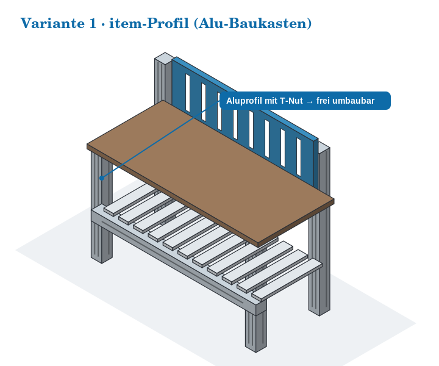
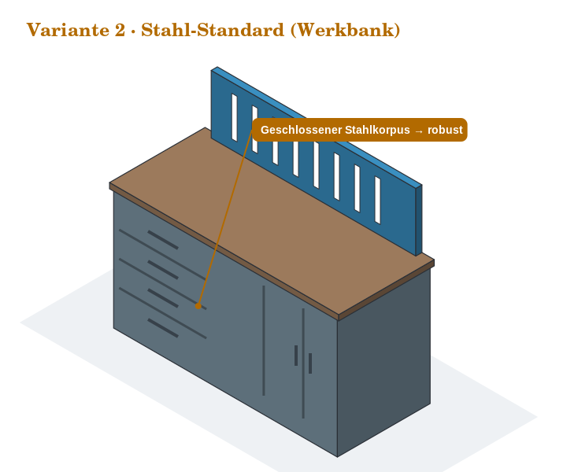
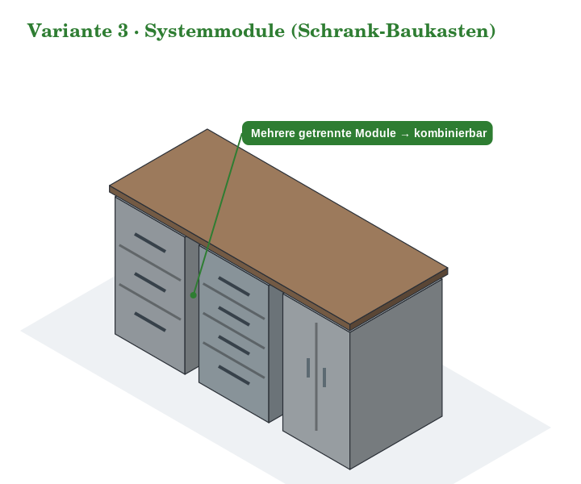
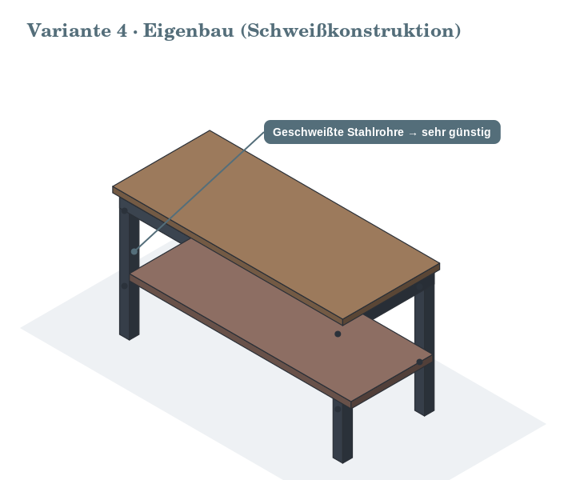

1️⃣ Variante 1 · item-Profil (Alu-Baukasten)

Offener Rahmen aus Aluprofil mit T-Nut – Anbauteile lassen sich an jeder Stelle einhängen und wieder versetzen.
| Vorteile | Nachteile |
|---|---|
| Sehr flexibel – jede Halterung ist versetzbar | Teuerste Option von allen vier Varianten |
| Ergonomisch, Höhenverstellung gut umsetzbar | |
| Jederzeit erweiterbar, ohne zu schweißen oder zu bohren |
Der T-Nut-Aufbau ist genau das, was ein 5S-Konzept braucht: Wenn sich beim ersten Audit zeigt, dass ein Haken 20 cm weiter links sitzen sollte, ist das eine Sache von einer Minute – kein neues Loch, kein Nachlackieren.
2️⃣ Variante 2 · Stahl-Standard

Klassische Stahlwerkbank mit Schubladenblock – als Katalogware sofort verfügbar.
| Vorteile | Nachteile |
|---|---|
| Robust – für den Werkstattbetrieb gebaut | Wenig flexibel: Was ab Werk nicht vorgesehen ist, lässt sich kaum nachrüsten |
| Günstig in der Anschaffung | |
| Sofort einsatzbereit, kein Aufbau- oder Bauaufwand |
3️⃣ Variante 3 · Systemmodule

Drei getrennte Module unter einer durchgehenden Platte – der Mittelweg zwischen Katalogware und Baukasten. Eine Lochwand ist hier noch nicht dargestellt, wäre aber ergänzbar.
| Vorteile | Nachteile |
|---|---|
| Viel Stauraum durch kombinierbare Module | Kosten und Flexibilität jeweils im Mittelfeld – in keiner Disziplin die beste Wahl |
| Später erweiterbar durch zusätzliche Module | |
| Gute Ordnung ab Werk (Schubladeneinteilung) |
4️⃣ Variante 4 · Eigenbau (Schweißkonstruktion)

Geschweißte Stahlrohre mit aufgelegter Platte – im Material die mit Abstand günstigste Lösung.
| Vorteile | Nachteile |
|---|---|
| Sehr günstig im Material (~800–1.500 €) | Hoher Bauaufwand – die Arbeitszeit fehlt an anderer Stelle; Optik variabel je nach Ausführung |
| Robust – Dimensionierung frei wählbar | |
| Passgenau auf den Platz und die Maschinen zugeschnitten |
⚖️ Alle vier im direkten Vergleich
| Variante | Vorteile | Nachteile | Anschaffung |
|---|---|---|---|
| V1 · item-Profil | Sehr flexibel, ergonomisch, erweiterbar | Teuerste Option | 4.000–7.000 € |
| V2 · Stahl-Standard | Robust, günstig, sofort einsatzbereit | Wenig flexibel | 1.500–3.000 € |
| V3 · Systemmodule | Viel Stauraum, erweiterbar, gute Ordnung | Mittlere Kosten & Flexibilität | 2.500–4.500 € |
| V4 · Eigenbau | Sehr günstig im Material, robust, passgenau | Hoher Bauaufwand, Optik variabel | ~800–1.500 € Material |
Die Spanne zwischen der günstigsten und der teuersten Variante beträgt rund das Fünffache. Ob dieser Aufpreis gerechtfertigt ist, lässt sich nicht am Preis allein entscheiden – dafür ist die gewichtete Nutzwertanalyse auf Seite 9 da.